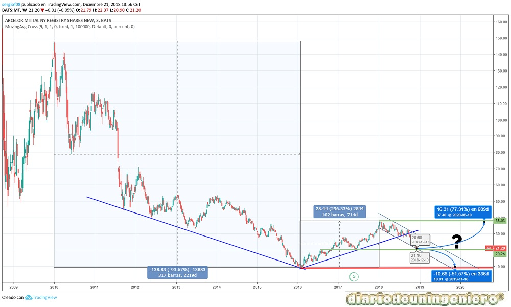
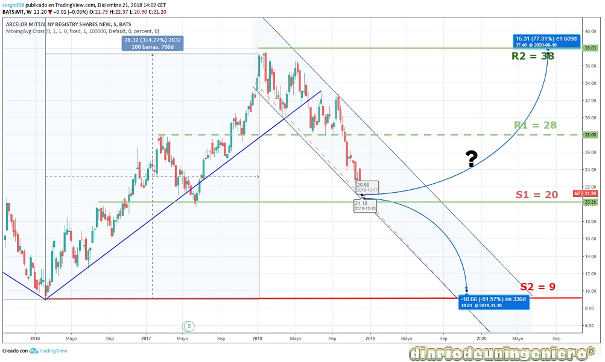

ArcelorMittal is the largest steel company in the world, with almost 200,000 employees in more than 60 countries . It was founded in 2006 through the merger of Mittal Steel and Arcelor.
In Spain, its activity is mainly focused on the northern area, especially in the Basque Country, Navarra, and Asturias. In total it has 17 distribution centers and the total workforce to 2018 amounts to 8,605 employees. Production in Spain in 2017 was 5.9 million tons of steel, representing 41.1% of domestic production (14.5 million).
In 2005 the world would start a bullish cycle due to hunger for China's raw materials . The Chinese giant began to wake up and consume steel at a rate never seen before. As a result, iron and copper would rise exponentially since the country's production of these materials, despite being huge, was far below the needs. In bullish cycles of raw materials the element that is usually premonitory of rises in the others is copper and the one that marks the real demand for iron. Steel is mostly made of iron, which is why Arcelor climbed so much.
However, these increases are usually very fast and always reach a point where it is above the needs. In 2008, an adjustment was suffered as soon as demand began to recede. An adjustment above also the necessary and then the rise would return. From 2012 China would start to increase the number of mines and workers so that they do not need to import as much raw material . This would have repercussions on manufacturers, such as Arcelor or the case of large American steelmakers. China grew almost 15% annually, something spectacular and that would begin to soften until 2015 in a rate of 7%. As of 2014, the Asian country's boom would also make the Chinese middle class grow strongly until it reaches almost 600 million Chinese. The number of rich people would also grow strongly reaching almost 100 million people. This would result in greater diversification of capital and the emergence of the Chinese stock market. There would be a boom in Chinese values, both construction and technology, and the Chinese stock market would grow at a dizzying pace.
In those moments, mid-2012, Arcelor would be creating the beginning of a bearish phase . As a consequence of the creation of numerous iron and steel industries and mines in China, by reducing its consumption it began to have surpluses. This would cause a boomerang effect in the world economy in which Chinese steel would begin to arrive in countries to which it was buying. The competition began to be very large to the point of placing steel below the manufacturing price (dumpping). For this, both the European Union and the United States would begin to apply tariff measures, with an increase of 20% in customs duties.
This would not be enough and the value would begin to suffer, without knowing very well until when this crisis could arrive. The value came to fall at 4 euros, although in the subsequent graphs it is not seen as it would be a contrasplit of 2: 5 later that would change the historical stock price. If we count that at beginning of 2015 the price of Arcelor was around 10 euros and came to fall to almost 4 euros that meant a fall of the company of 60% . And is that in the first half of 2015 the group would lose 549 million dollars, which meant multiplying by 3.57 their losses for the same period in 2014, which were 153 million dollars. The EBIDTA in the year would decrease by 1000 million and the turnover would fall in the same proportion, of 33%.
At the end of 2015, in addition to the crisis in China due to its slowdown, another crisis was added, such as the fall in oil prices due to the struggle between American Shale companies and Saudi Arabia. This country would have increased its production to the maximum to flood the crude oil market and manage to reduce the price of Brent's barrel below 30 dollars by the end of the year. With this measure it was intended to close refineries in the United States and deteriorate accounts of large American oil companies. As soon as the price started to fall, many wells would have to close as the extraction price reached in many cases at 50 dollars. However, many would reduce their production before deciding what to do. Saudi Arabia would be tightening and this increase would affect oil-dependent third countries such as Venezuela, Nigeria or Russia. These non-OPEC countries would also begin to suffer and a kind of global crisis would be created. In spite of countries such as Spain, which are so dependent on the price of crude oil that a drop meant to increase GDP growth by more than 1% per year, it would also play its part.
From 2016, once this crisis disappears Arcelor shares would begin a rally . The rally would accelerate with the victory of Trump and it would be possible to reach the values of the action at the beginning of 2015.
In terms of fundamentals, the company now has stable production levels and its profits have grown year after year. The EBDITA has risen, however, the company's debt remains high. The perspectives of the company in my view are good
Below I present the data of fundamentals that I find most important:
| ### | 2014 | 2015 | 2016 | 2017 | 2018 |
|---|---|---|---|---|---|
| Debt / Company Cash | Total Debt (M) | 13.040 | 58.527 | 54.082 | 57.667 | 57.366 |
| Benefit/ share value | |||||
| Capitalization(M) | 1.437 | 939 | 1.148 | 1.257 | 1.449 |
| EBDITA (M) | 5.981 | 4.815 | 5.799 | 7.033 | 7.140 |
| PER | - | - | 40 | 5,57 | 6,33 |
| Net Benefit (M) | - | -7.314,7 | 1.675 | 3.692,5 | 4.726,7 |
| Dividend | 27.6777 | ||||
| Profitability per share(%) | 0,91 | - | 0,80 | 2,09 | 2,73 |
| Debt/EBDITA | 2,18 | 12,15 | 9,32 | 8,2 | 8,034 |
If we look at the long-term chart we see a large V typical of cyclic values like this. In it we have a minimum at the beginning of 2016 around 10 euros. This value is now the maximum support that we find in the value and that today should not be exceeded. We are now at a crossroads. On the one hand, due to the bearish spiral of the global indexes where the Dow Jones broke supports the value could go down to lows, although the situation in the company is much better than when low as the viability of the company is assured.
If confirmed the break of the first support at 20 euros it would be best to wait to enter the area near the 10 euros with a stop of 10% on minimum. The probability of this happening is less than 50%, so the appropriate strategy would be to keep and not invest or divest anything in this value.

If we go to the short-term chart, we see a clear divergence from October of this year, 2018, in which the line of the upward trend that had been carried and annual minimums have been broken. This support is very important not to lose it and to get over the value would easily go to maximums. For this I would have to beat the resistance that we found at 28 euros. That would be the opening of the purchase window we are looking for.
Otherwise, could follow a side channel between 20 and 28 euros for a while , so it is recommended to reduce exposure in case you can not beat the resistance of 28 euros and invest in other values with a clearer horizon.

© 2016 - All Rights Reserved - Diseñada por Sergio López Martínez
![[Valid RSS]](https://www.feedvalidator.org/images/valid-rss-rogers.png "Validate my RSS feed")